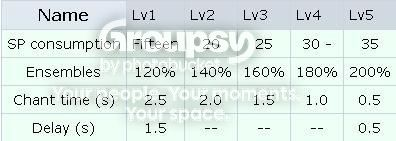

ขอบคุณมากครับ Guide ทำดีมาก
ธรรมดาเล่นแต่สาย Backpacker
เพิ่งเคยเล่นสาย Fighter ช่วยได้เยอะเลย
Best regards,
Astropia
ธรรมดาเล่นแต่สาย Backpacker
เพิ่งเคยเล่นสาย Fighter ช่วยได้เยอะเลย
Best regards,
Astropia
http://eco.froztic.in.th/archive/ecofanclub/
http://eco.froztic.in.th/archive/ecofanclub/viewtopic.php?f=14&t=49650
Solo.99 เขียน:Solo.99 เขียน:ใครพอรู้ สเตตัสสายลาน ใช้สกิลมูโซ 50คราส3 มั่งครับ
ขอเอาแบบโหดๆน้าครับ เอาแบบสู้คนได้ ถึก ขอเทพๆ
ทั้งตัวใส่ของ+สเตตัสครับ แมวขาว กุหลาบขาว อก11 เสื้อ+10 ดาบ2มือ+10 เท้า+Dex
ใครพอรุ้สเตตัส มั่งครับ ขอโหดๆน้าครับ
------------------------------------------------------
ขอขอบคุณร่วงหน้า
ใครรู้มั่งครับเบรตสายลาน
 Sword Assail
Sword Assail 
Solo.99 เขียน:แล้ว 5สกิลนี้ ควรสวิทเอาไปคราสเบรตดีม่ะครับ
แล้ว Mineuchi นี้ประมานกี่วิงิ พอจะร่าย Killer Land แล้ว มูโซทันมิครับ
วอคายด้วย ร่ายKiller Land แล้วมูโซ ทันมิครับ

Solo.99 เขียน:เอา Gravity หรือ Mineuchi ดีครับ